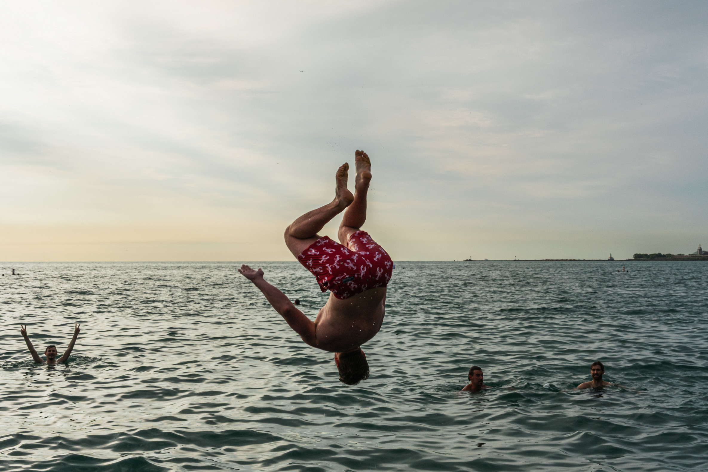
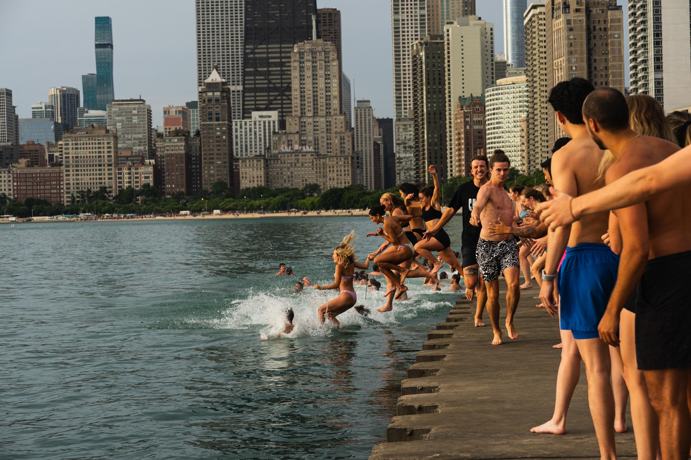
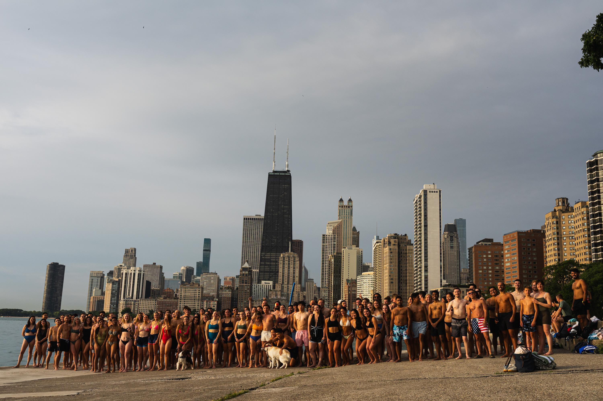
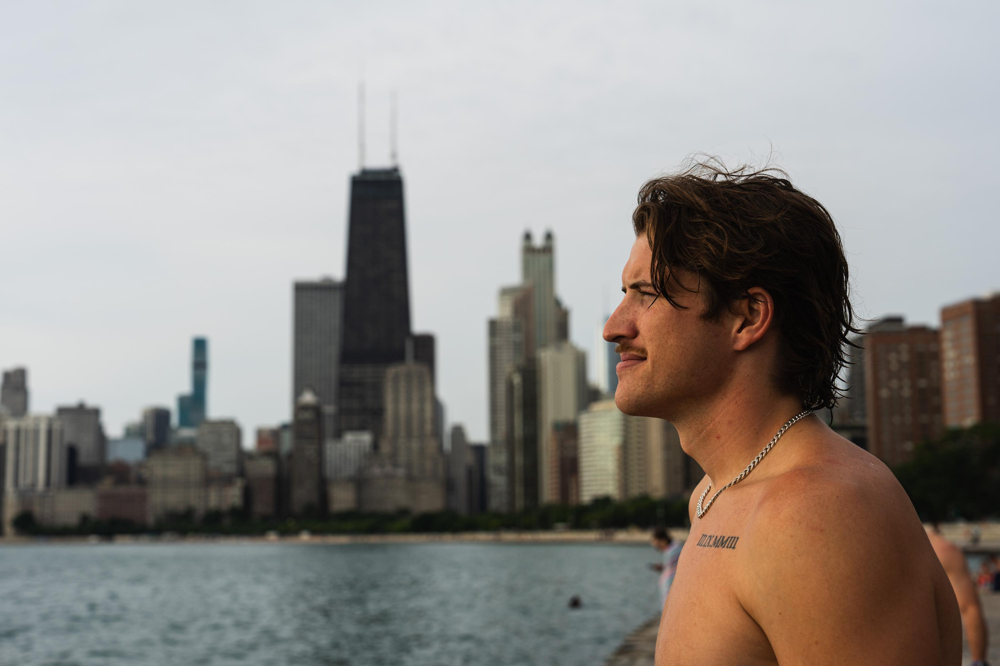
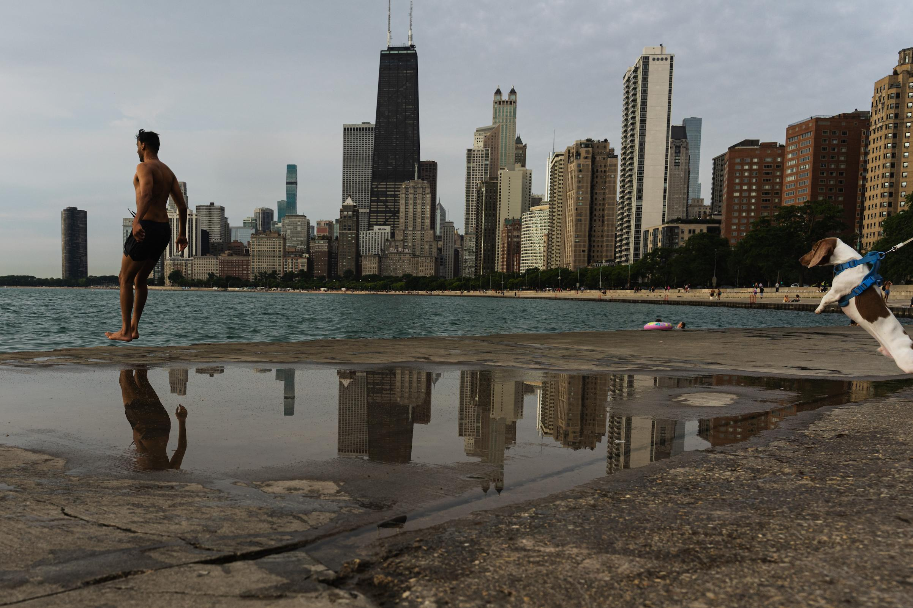
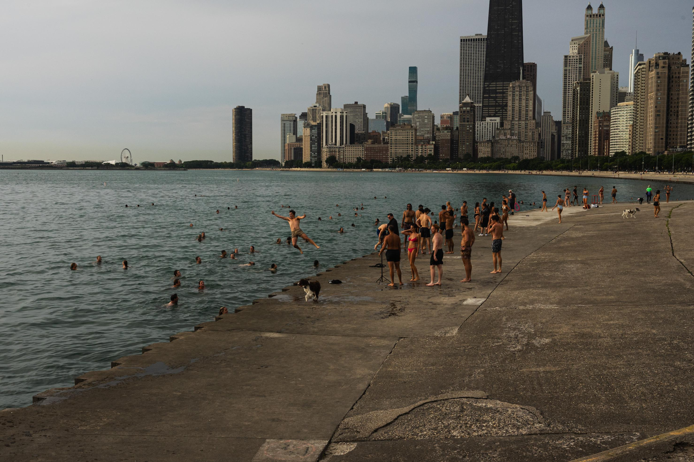
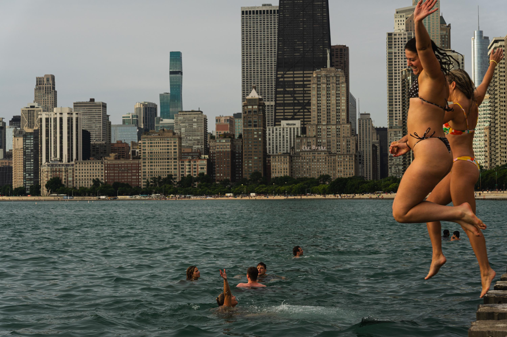
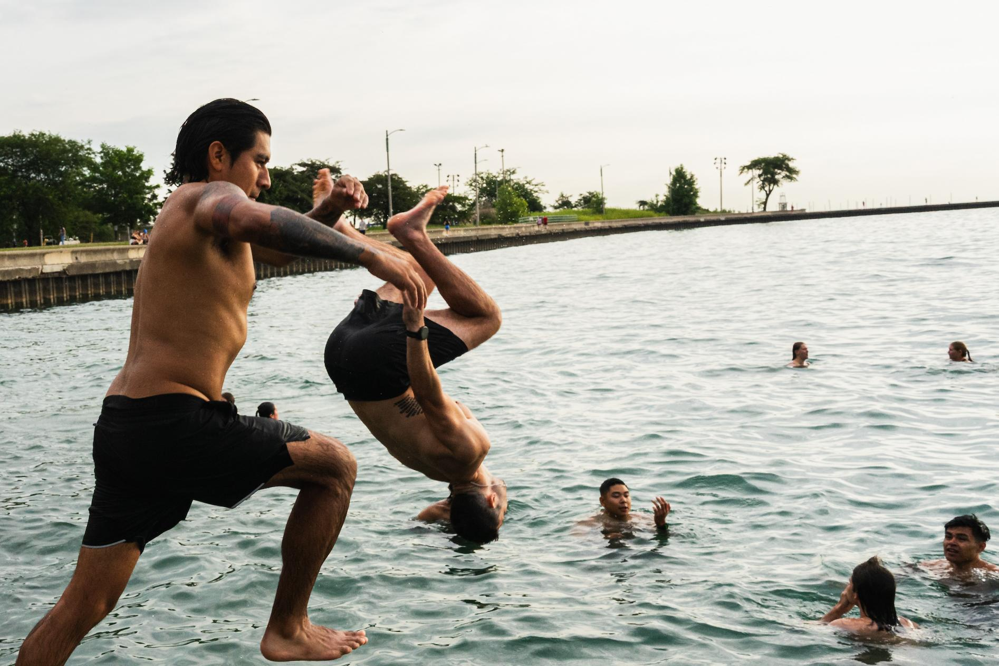
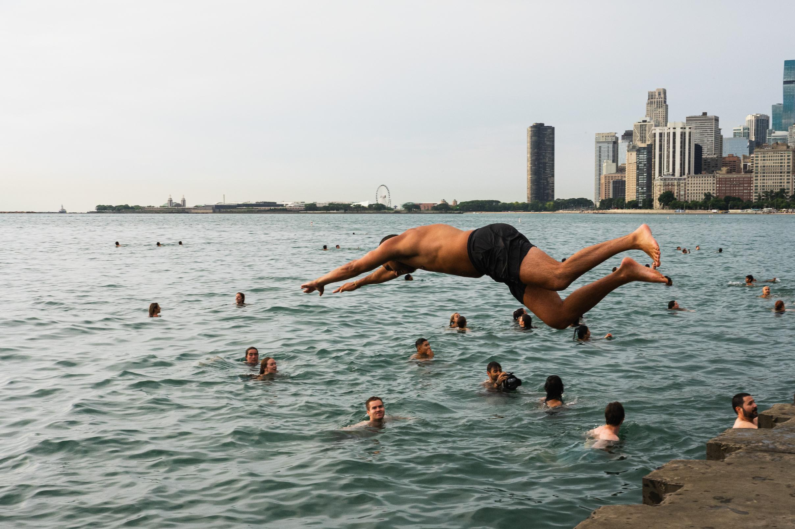
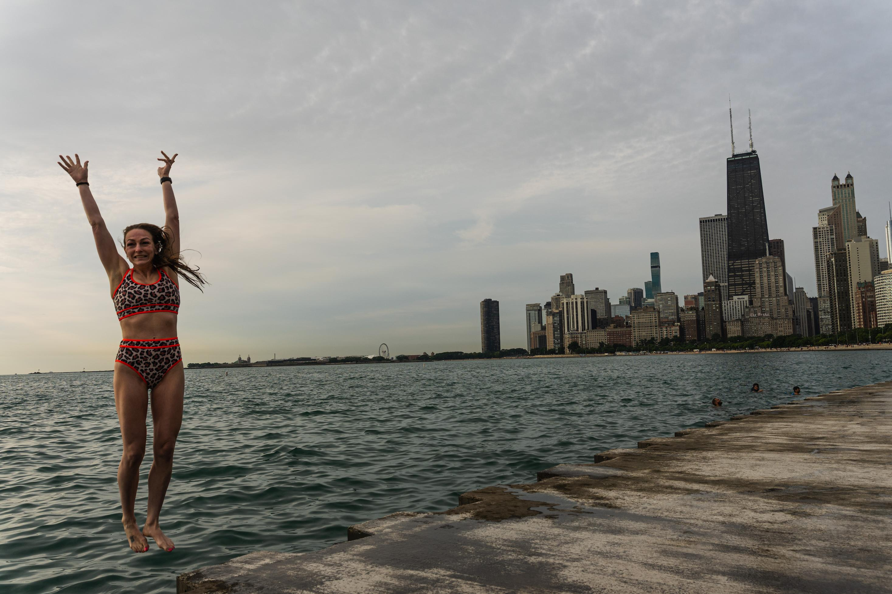

Frosty Fridays draws crowd and community

Participant jumps into Lake Michigan for Frosty Fridays near the Lincoln Park Chess Pavilion on June 24, 2026.

Jacob White, the organizer of Frosty Fridays, Friday morning, ran down the concrete beach, high-fiving people as they jumped in behind him. June 24, 2026

Participants pose for photo during Frosty Fridays near the Lincoln Park Chess Pavilion on June 24, 2026.

Jacob White poses for a portrait. He started to post on social media about his Friday morning jumps into the lake shortly after moving to Chicago, attracting around a hundred people to join him. One reason he started was as a way to meet people. "Moving to a big city is challenging to go out and meet new friends. So I was like, [Frosty Fridays] is a good way to, you know, connect with people." June 24, 2026

Participant jumps into Lake Michigan for Frosty Fridays near the Lincoln Park Chess Pavilion on June 24, 2026.

Around a hundred people jumped into Lake Michigan near the Lincoln Park chess pavilion for Frosty Fridays. June 24, 2026.

Participants jump into Lake Michigan for Frosty Fridays near the Lincoln Park Chess Pavilion on June 24, 2026.

Participants jump into Lake Michigan for Frosty Fridays near the Lincoln Park Chess Pavilion on June 24, 2026.

Participants jump into Lake Michigan for Frosty Fridays near the Lincoln Park Chess Pavilion on June 24, 2026.

Participant jumps into Lake Michigan for Frosty Fridays near the Lincoln Park Chess Pavilion on June 24, 2026.